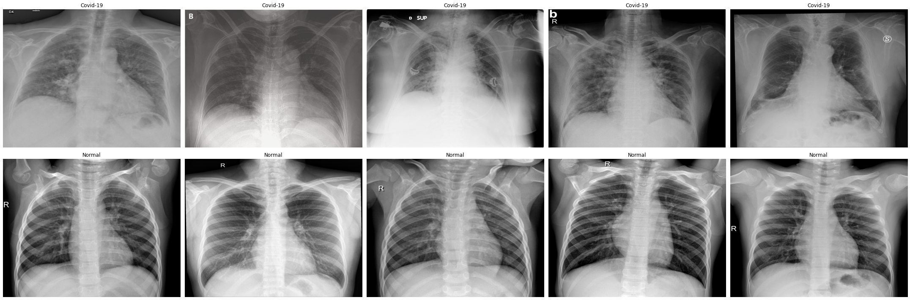
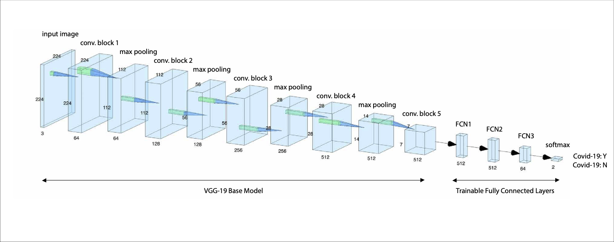

Deep Learning Classifier
With growing spread of Covid-19 pneumonia, this virus rapidly became a global crisis. In early days of the pandemic, public access to labeled frontal chest X-rays was limited. In developing countries, accessibility to high-end computing and lack of staff also added to further complications to this matter. Therefore, I proposed this project as an open-source and non-commercial research study. This end-to-end framework included an auto-segmentation model embedded in an iOS interface. The training datasets comprised positively labeled Covid-19 pneumonia frontal chest X-rays (partially gathered by Dr. Cohon [link]) from the publicly available material published online and public databases for non-covid cases (including pediatric cases [link]).

The classification model was constructed based on a VGG-19 architecture. Transfer learning was performed to avoid overfitting and for improved classification outcome. A multilayer perceptron (MLP) was added for re-training of this classification model. To adapt our images for the base VGG-19 structure, the grayscale X-ray scans were resized to (224,224) and concatanated three-fold to account for RGB input requirements. Exhaustive data augmentation techniques were applied for enhance model robustness. The model development and training was done using Tensorflow and Keras libraries. The preliminary code was made openly available on my Github [link]. The publication for this work is also available online [link] [pdf].

iOS Application Development
In an effort to make my model more accessibile and compatible for use on portable iOS devices, the trained deep learning model was embedded via Tensorflow Lite into an iOS application which I developed using Swift/X-code. This application enables users to perform classification inference from chest X-rays both from saved images in the device gallery as well as those taken from the camera. Although this application was proposed only for innovative research purposes, it provides an exciting outlook for medical imaging technologies that may bring accessibility to deep learning-based classification models worldwide in order to assist rapid diagnosis of Covid-19 disease. Additionally, it includes the functionality to define ROIs on uploaded images and save images to device gallery. While the lack of access to large labeled chest X-ray datasets limited the network generalizability and robustness, an option to upload labeled images with light metadata to a public database was provided. The crowd-sourcing for thid online database was developed by Firebase. For patient data confidentiality restrictions, an automatic text removal algorithm was also developed and embedded for this functionality. I developed this end-to-end framework merely individually with supervision of two radiologists from my supervisory team and one radiologist from Milan, Italy. The code for this application is available online [link].